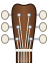

ocher.github.io
Bytom mine shafts
Maps of old mine shafts near Bytom. The data was saved from a website that no longer works: http://www.bytom.webd.pl/kopalnie/

Guitar and ukulele tuner
A tuner that works in your browser, on your phone or computer. It finds the string you play and shows if you should tighten or loosen it.